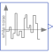

BandLimitedWhiteNoiseNoise generator to produce band-limited white noise with normal distribution |

|
Information
This information is part of the Modelica Standard Library maintained by the Modelica Association.
A summary of the common properties of the noise blocks is provided in the documentation of package Blocks.Noise. This BandLimitedWhiteNoise block generates reproducible, random noise at its output according to a band-limited white noise distribution. This is performed by using a normal distribution with mu=0 and sigma = sqrt(noisePower/samplePeriod).
In order for this block to produce meaningful results, you should set the following parameters:
- The samplePeriod of the block should be much faster (say by a factor of 100) than the fastest dynamics of the system fed by the block's outputs.
- The noisePower of the signal should be set to the expected power per frequency of the white noise. Since many system models assume a noise power of 1, this preset may be a reasonable first choice (= default).
About sampling frequencies
Ideal white noise contains all frequencies, including infinitely high ones. However, these usually cannot be observed in physical systems, since all physical systems in one way or the other contain low-pass filters. It is thus sufficient to generate a limited range of frequency content in the noise signal, as long as it exceeds the frequencies of the subsequent dynamics by a sufficiently high factor (of e.g. 100).
About noise power
Ideal white noise has a flat, i.e. constant, power spectral density for all frequencies. It has thus infinitely high power, because the total power of a signal can be obtained by integrating the power spectral density over all frequencies. The following three ways to think of the power of a signal may be helpful:
- The energy of a signal is the integral of its squared absolute value over time. The signal's power is this integral divided by the time span of the integral.
- The total power of a signal can also be obtained by integrating its (two-sided) power spectral density over all frequencies.
- The total power of a signal is finally also equal to its variance.
In order to set the correct level of the band-limited white noise power spectral density,
the variance of its normal distribution can thus be influenced directly.
Recalling that the samplePeriod of the noise signal generates frequency content in the
range ±0.5/samplePeriod, the variance must be increased to generate sufficient
total signal power. The total power must match the product of the noisePower and its
frequency bandwidth 1/samplePeriod: signal power = signal variance = noisePower / samplePeriod.
Example NoiseExamples.DrydenContinuousTurbulence demonstrates how to utilize this block to model wind gust.
Parameters (9)
| samplePeriod |
Value: Type: Period (s) Description: Period for sampling the raw random numbers |
|---|---|
| enableNoise |
Value: globalSeed.enableNoise Type: Boolean Description: =true: y = noise, otherwise y = y_off |
| y_off |
Value: 0.0 Type: Real Description: y = y_off if enableNoise=false (or time |
| useGlobalSeed |
Value: true Type: Boolean Description: = true: use global seed, otherwise ignore it |
| useAutomaticLocalSeed |
Value: true Type: Boolean Description: = true: use automatic local seed, otherwise use fixedLocalSeed |
| fixedLocalSeed |
Value: 1 Type: Integer Description: Local seed (any Integer number) |
| startTime |
Value: 0.0 Type: Time (s) Description: Start time for sampling the raw random numbers |
| localSeed |
Value: Type: Integer Description: The actual localSeed |
| noisePower |
Value: 1 Type: Real Description: Power of white noise signal |
Connectors (1)
| y |
Type: RealOutput Description: Connector of Real output signal |
|---|
Components (1)
| globalSeed |
Type: GlobalSeed Description: Definition of global seed via inner/outer |
|---|
Used in Examples (1)
|
Modelica.Blocks.Examples.NoiseExamples
Demonstrates how to model wind turbulence for aircraft with the BandLimitedWhiteNoise block (a simple model of vertical Dryden gust speed at low altitudes < 1000 ft) |